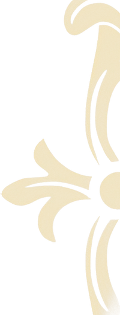
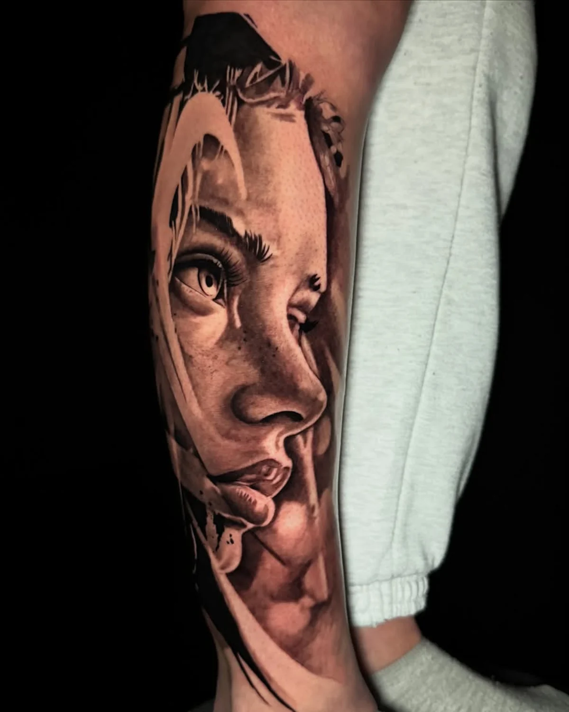
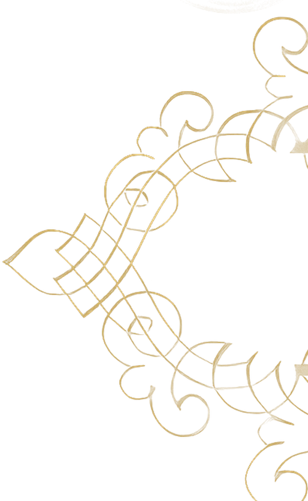
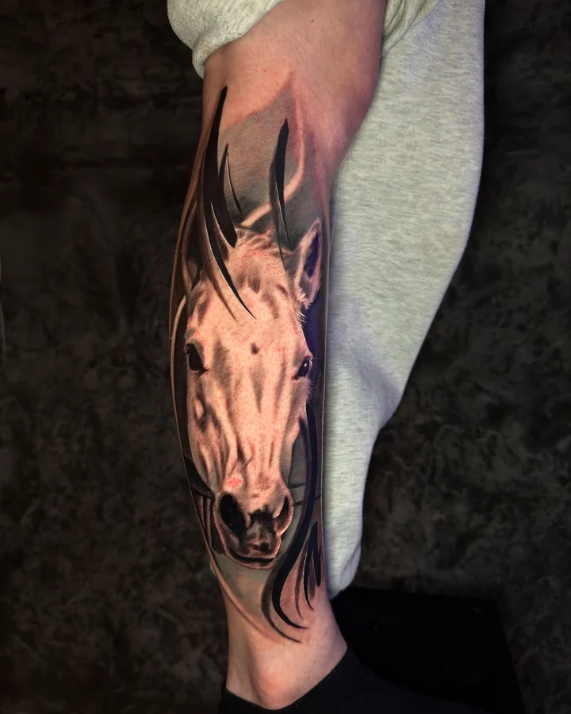
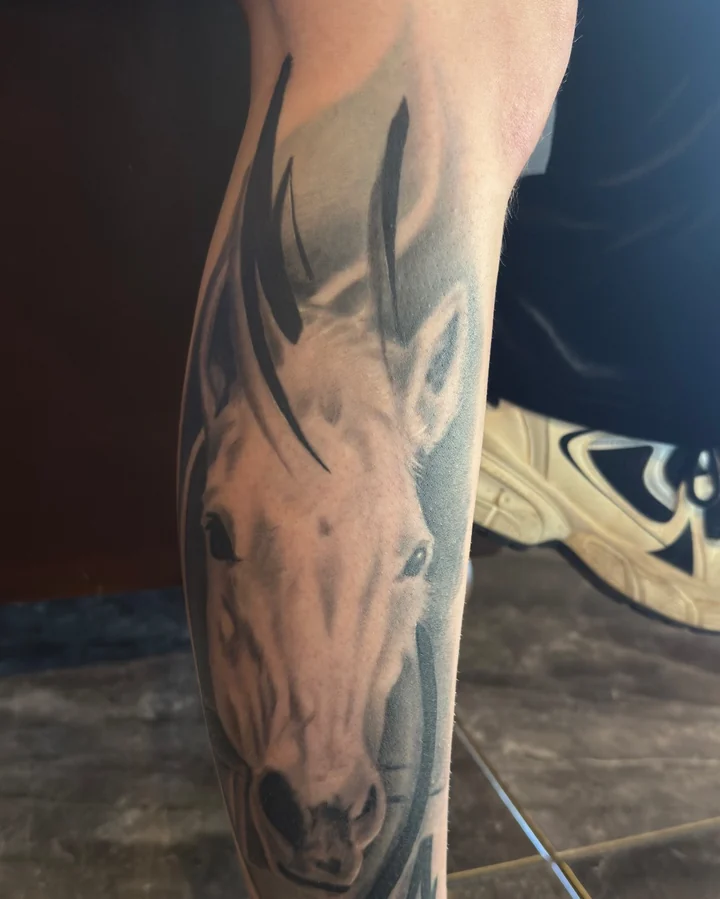
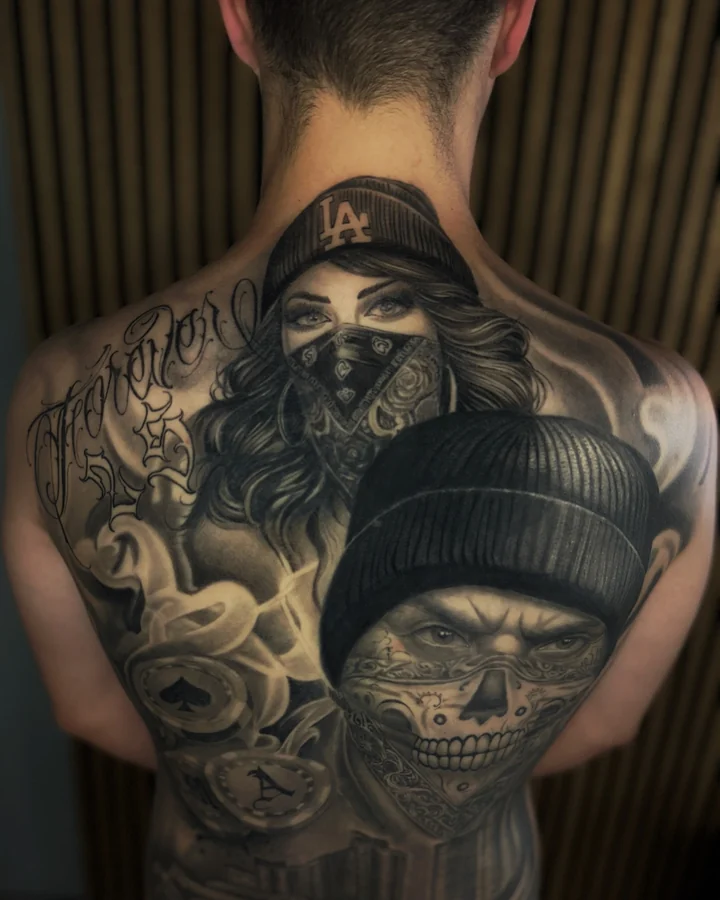
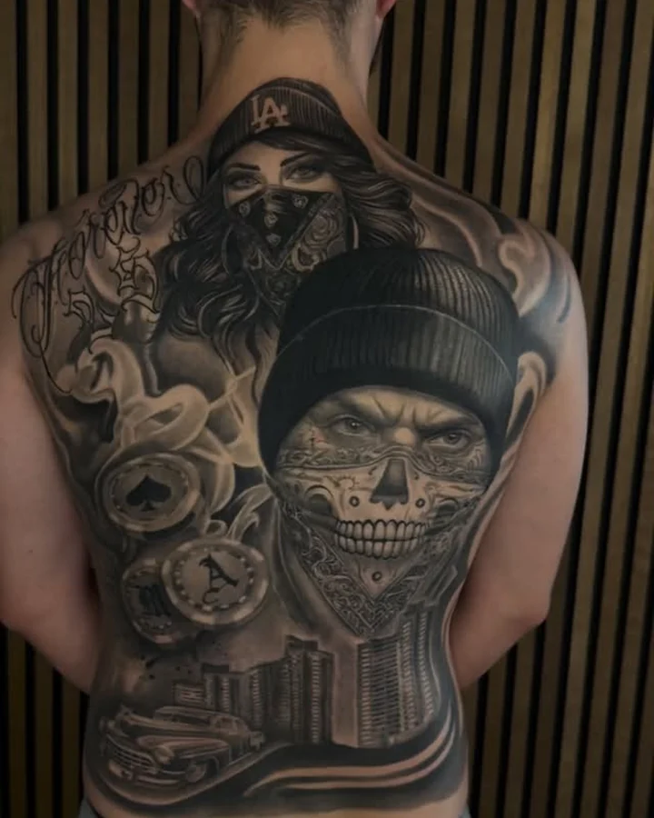
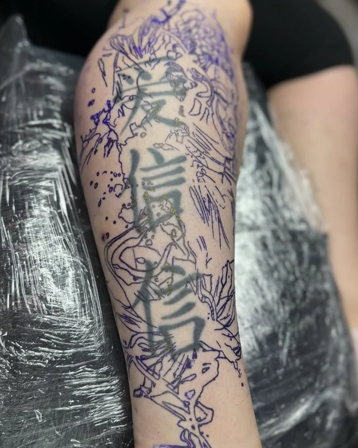
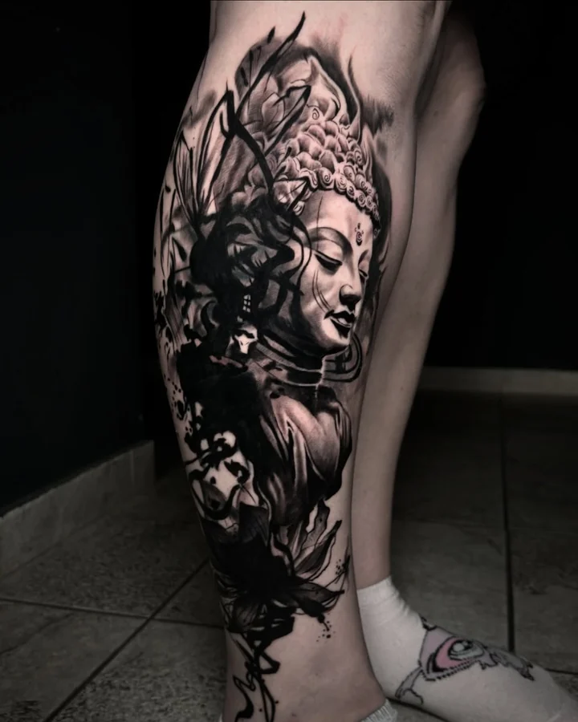
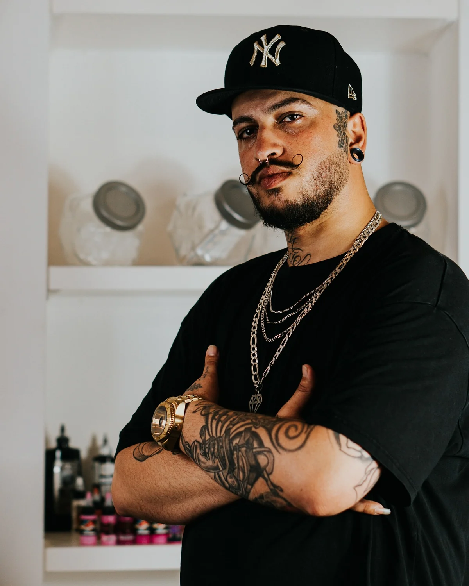

Vagner de Lima
Realismo a preto e cinzaBensheim · Lisboa

Trabalhos
Retratos, animais e fechamentos a preto e cinza. Cada sombra tem um propósito.
Do primeiro dia à pele sarada
O realismo tem de aguentar o tempo. Aqui, a mesma peça acabada de fazer e já cicatrizada, e um cover-up do antes ao depois.

Acabada de fazer
Cicatrizada
Acabada de fazer
Cicatrizada
Antes
Depois
Cada sombra tem um propósito
Sou o Vagner de Lima, tatuador brasileiro de realismo a preto e cinza. Depois de anos a tatuar em Lisboa, hoje divido a agenda entre Bensheim, na Alemanha, e Portugal.
Amor por cada linha, cada sombra, cada detalhe que fica na pele para sempre. Não é só tatuagem. É compromisso. É história.
Cada projeto começa com uma boa conversa e referências claras. Nos cover-ups, analiso com honestidade o que é possível antes de desenhar.
Guest em Praga · Tattoo Convention Mannheim
Onde tatuo
Sessões só com marcação. Diz-me a cidade no pedido e eu respondo com as próximas datas.
Pedir orçamento
O orçamento é feito por mensagem. Para responder com preço e data, preciso de quatro coisas:
A ideia
Descreve todos os elementos que queres no projeto.
O local
Uma foto da zona do corpo a tatuar.
O tamanho
Circula na foto a área que a tatuagem deve ocupar.
A referência
Pelo menos uma imagem de referência.